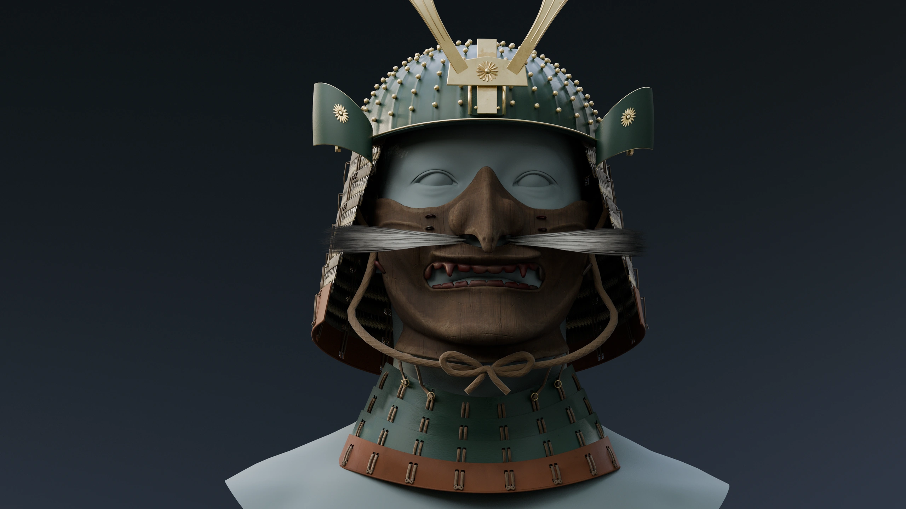
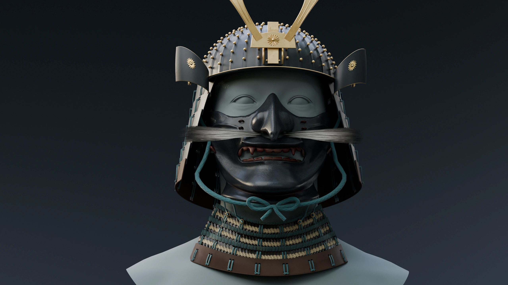

Iron & odoshi
Lacquered iron mask
Textured lacing · teal tying cord
Wood & lacquer
Carved-wood mask
Lacquer throat plates · natural cord
Drag the divider, or use the arrow keys. Same framing · reference head not included.